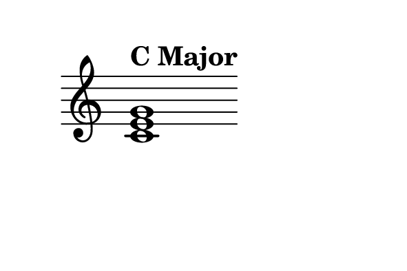
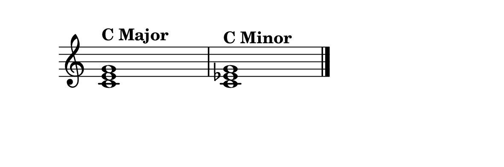
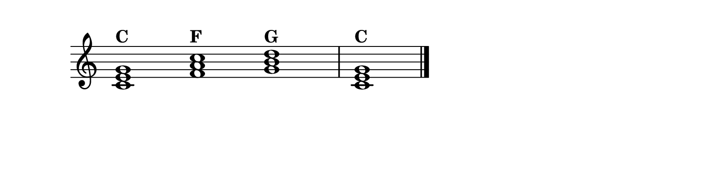

From Single Notes to Harmony
Everything you have learned so far,the keyboard layout, reading notes, understanding rhythm,has been leading to this moment. Now we are going to take those individual notes and combine them into something greater: chords.
If a melody is a sentence spoken by a single voice, a chord is a room full of voices singing in agreement. Chords provide the harmonic foundation of virtually all Western music. They are the reason a pop song feels uplifting, a film score feels suspenseful, a hymn feels reverent.
What Is a Chord?
A chord is any combination of three or more notes played simultaneously. The most fundamental type is the triad,exactly three notes stacked in a specific pattern. Triads are the building blocks of nearly all Western harmony.
A triad is built by stacking two intervals of a third on top of each other. Start with a note (the root), add a note a third above it, then another third above that. The result spans a fifth from bottom to top.

Major vs. Minor
The magic of triads lies in one small difference. A major triad is built with a major third on the bottom and a minor third on top (C–E–G). A minor triad reverses the order: minor third on bottom, major third on top (C–E♭–G).
Play both and listen. The major triad sounds bright, stable, and open. The minor triad sounds darker, more introspective, more emotional. That single half-step difference in the middle note is the entire difference between joy and melancholy in music.

The distance between major and minor is a single half step. That tiny shift carries the weight of every sad song you have ever loved.
Building Triads in Any Key
Once you understand the formula, you can build a triad starting on any note. For a major triad: count up 4 half steps from the root to find the third, then 3 more half steps to find the fifth. For a minor triad: 3 half steps, then 4.
Try It: Build These Triads
G major: Start on G, count up 4 half steps (B), then 3 more (D). G–B–D.
D minor: Start on D, count up 3 half steps (F), then 4 more (A). D–F–A.
F major: Start on F, count up 4 half steps (A), then 3 more (C). F–A–C.
Inversions
A chord does not always have to be played with the root on the bottom. When you rearrange the notes so a different note is the lowest, you create an inversion.
Take C major (C–E–G). Move the C up an octave: now you have E–G–C. This is first inversion. Move the E up too: G–C–E. That is second inversion. Same three notes, same chord name, but a different voicing and a slightly different color.
Inversions are not just theoretical,they make your playing smoother. Instead of jumping your hand across the keyboard to play the next chord, inversions let you find a voicing that is close to where your fingers already are.
Your First Accompaniment
Exercise: Three-Chord Pattern
Play these three chords in sequence with your left hand, holding each for four beats: C major (C–E–G), F major (F–A–C), G major (G–B–D), then back to C major.
This C–F–G–C pattern is one of the most common progressions in all of music. You have heard it in hundreds of songs.

Chords are where music stops being a single voice and becomes a conversation. Welcome to harmony.